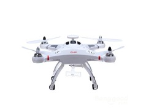

Модель квадрокоптера Cheerson CX20
Описание товара
Квадрокоптер CX-20 со встроенным модулем GPS предназначен для полётов с камерой типоразмера GoPro. На модели имеется специальный подвес для камеры. Благодаря использованию GPS, летательный аппарат, в случае потери сигнала, выполняя команду с пульта, способен самостоятельно проложит путь к месту взлёта и приземлиться в автоматическом режиме.
Характеристики товара
Аккумулятор и зарядное устройство в комплекте
,6 и канальная система управления

Подобный товар